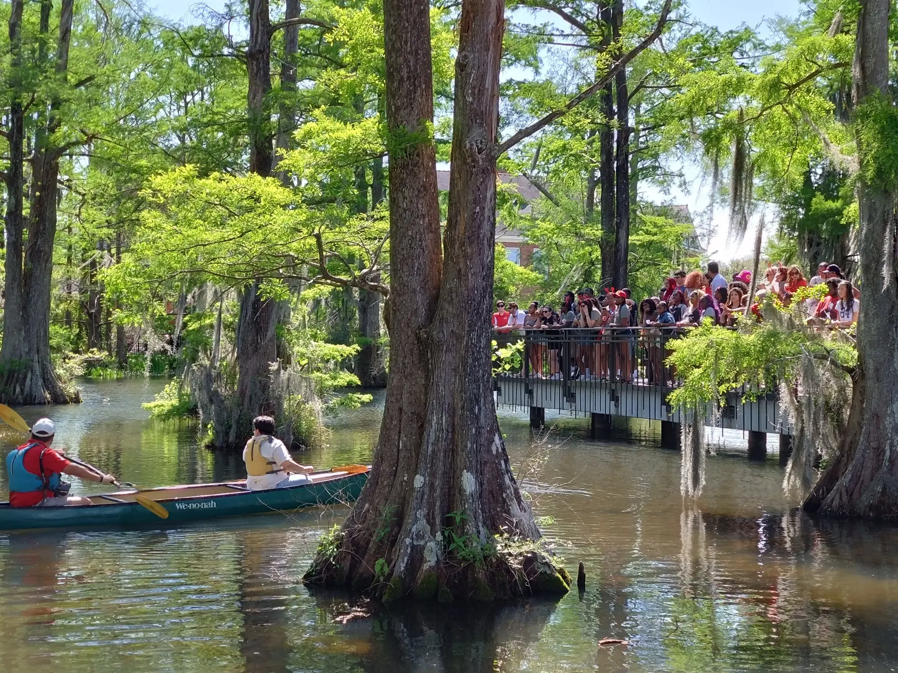

Welcome to our new website
We have launched the new Tamori Lab website with updated information about our research, people, publications, and lab activities.

Publications, discoveries, and updates from the Tamori Lab.
We have launched the new Tamori Lab website with updated information about our research, people, publications, and lab activities.
Our collaborative study, “Polyploidy reprograms epithelial cells for motility and phagocytosis via stress signaling,” has been published in the Journal of Cell Biology.
Read the article